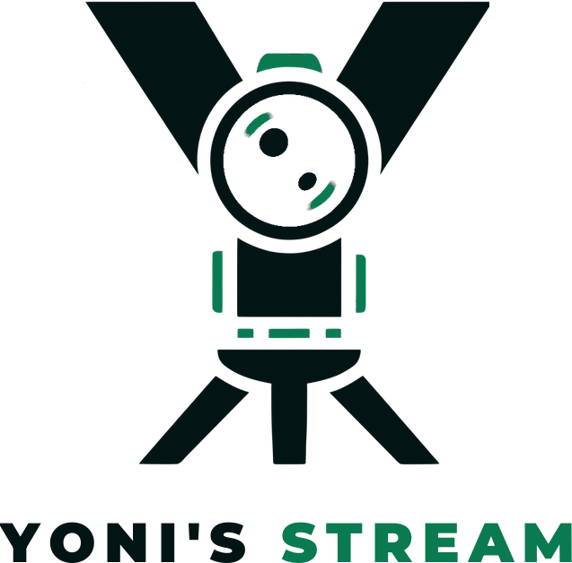
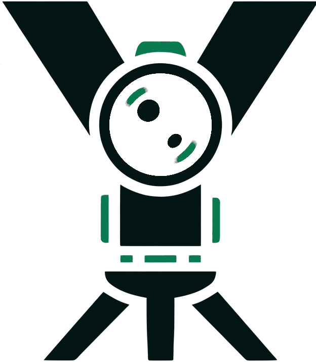
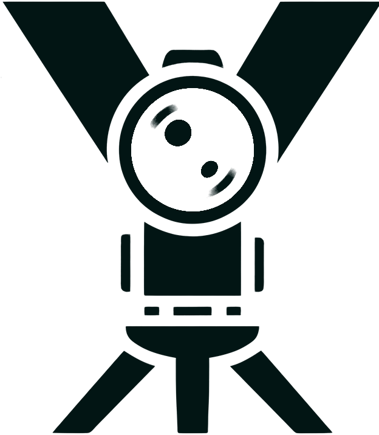
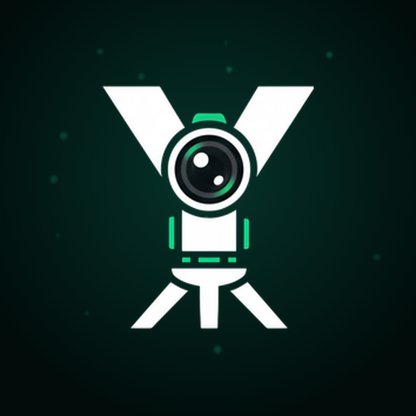

Brand assets
The brand, ready to use
Yoni's Stream logos, symbol, colors and typefaces to talk about the app, review it or link to it. Everything in high-resolution transparent PNG.
Logos and symbol
Pick the version that suits the background. If in doubt, use the full-color horizontal logo.
















Clear space and minimum size
Leave clear space around the logo equal to a quarter of its height (the "x" measure). No text, other logos or borders go there.
Minimum size
- Symbol: 24 px tall on screen, 10 mm in print.
- Horizontal logo: 120 px wide on screen, 35 mm in print.
- App icon: 48 px.
Colors
Tap a color to copy its code.
Typefaces
Both are free (SIL Open Font License) and available on Google Fonts.
Don'ts
How to write it
Yoni's Stream: capital Y and S, with an apostrophe. The logotype is all caps: YONI'S STREAM.
Use
You may use these assets to talk about Yoni's Stream, review it or link to its Google Play listing. Don't use them to suggest the app sponsors or endorses something without permission.
Press or partnerships? Write to yonisstreamstudio@gmail.com